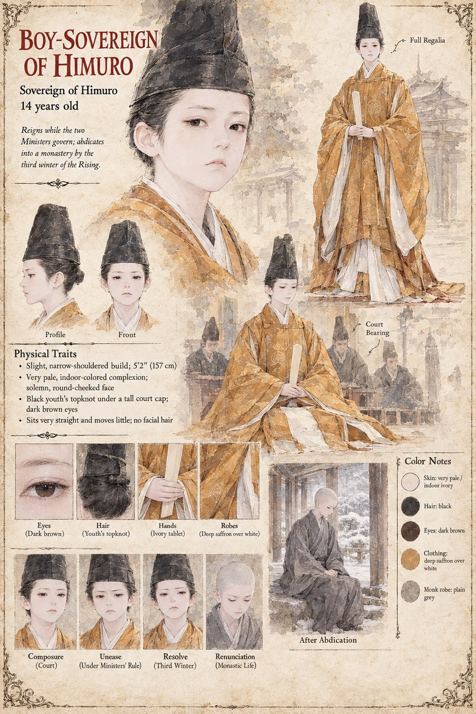

The Boy-Sovereign of Himuro
Sovereign of Himuro · 14 years old at the opening · abdicates into a monastery
A sovereign of fourteen sits the throne of Himuro, as sovereigns of fourteen generally do, which is to say that the realm is governed by the two Ministers who stand on either side of him, the Left and the Right, in an arrangement of mutual surveillance so old that neither can remember which began it. He has no name and no lines in the manuscript. He is the fixed point between Sugino no Arikuni and Sukenori, whose thirty years of watching each other the whole of the Law of the Clean Hand grows out of; the court, the Festival and the Stone all go on in his reign, and none of them needs him to speak.
By the third winter of the Rising he has abdicated into a monastery; the Log lists the abdication among the results, beside the fall of both Ministries. The histories of Himuro, which are agreed on the causes of the Rising, give it as the ambition of provincial warriors and the arrogance of a Left Ministry in its declining years, and, in the more philosophical commentaries, as the natural consequence of a boy-sovereign and two old men. The manuscript says nothing of his age at the abdication or of his life afterward. The sheet gives him a slight, narrow-shouldered build, a very pale indoor complexion, a black youth's topknot under a tall court cap, deep saffron robes over white, an ivory tablet in his hands, and, after the abdication, a shaven head and a plain grey monk's robe in a snowy cloister. All of that is the sheet's own.